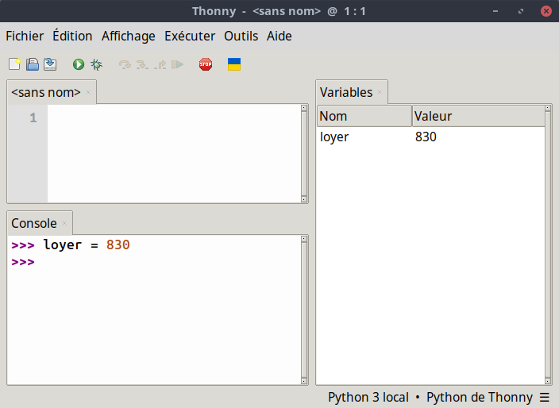
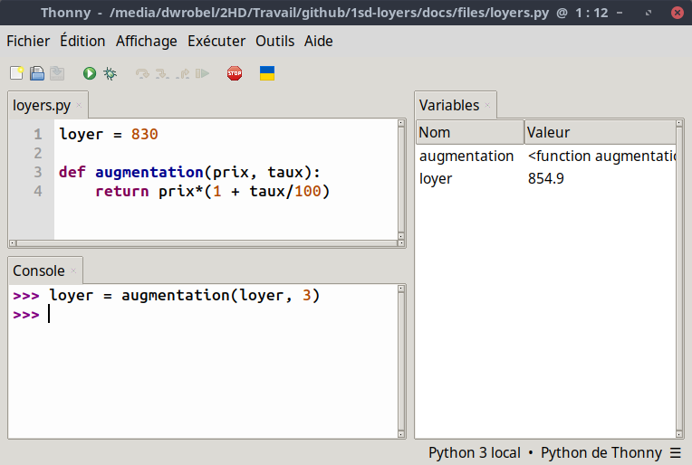

Étude d'un loyer
Pour commencer
Lorsqu'un un individu souhaite habiter dans un logement, il se présente à lui deux solutions :
- acheter ce logement ;
- louer ce logement.

La location consiste à utiliser le logement payé par une autre personne et en contrepartie, le locataire doit lui verser un loyer.
Un exemple
Un particulier propose son appartement T3 situé à Tourcoing.
Le loyer est de 830 euros.
Pour commencer
- Ouvrir Thonny et définir la variable
loyerqui vaut 830. -
Dans le Menu Affichage du logiciel, vérifier que l'item Variables est bien coché.
 -
Le loyer subit une augmentation de 3%. Taper l'instruction
loyer*(1+3/100)dans la console.- Quelle valeur obtient-on ?
- La valeur de la variable
loyera-t-elle été modifiée ?
-
Pour mettre à jour la valeur du loyer, taper la commande
loyer = loyer*(1+3/100)et observer le contenu de la variableloyer. -
Le propriétaire décide d'augmenter le loyer de 3% tous les ans.
- Taper les instructions pour obtenir le prix du loyer après cinq années.
- Au bout de combien d'années le loyer dépassera-t-il 1000 euros ?
Avec des fonctions
Pour commencer, vous êtes invité à télécharger le fichier loyers.py.
Quelques manipulations
- Ouvrir le fichier avec Thonny et l'exécuter avec l'icône
 .
. -
Taper l'instruction
loyer = augmentation(loyer, 3)et observer l'effet sur la variableloyer. -
Pour éviter d'avoir à taper cinq fois l'instruction
loyer = augmentation(loyer, 3)on peut aussi écrire dans la console :qui signifie : Répète 5 fois l'instruction
loyer = augmentation(loyer, 3). -
Dans le script, écrire une fonction
reduction(prix, taux)qui renvoie le nouveau prix après une réduction de taux %.- Relancer le script avec l'icône .
- Observer que la variable
loyerest revenue à son prix initial. - Réaliser 10 augmentations de 5% sur le loyer à l'aide d'une boucle.
- Effectuer une réduction de 50% sur le loyer à l'aide d'une instruction et observer qu'on ne revient pas au prix initial.
- Relancer le script avec l'icône